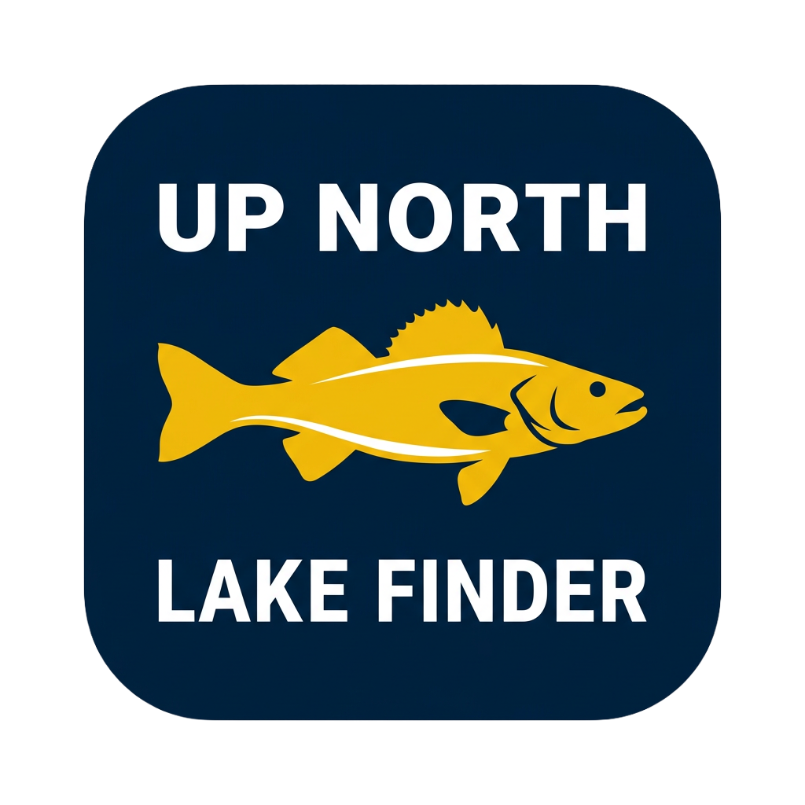

Up North Lake FinderSearch 3,700+ surveyed Minnesota lakes by fish species and abundance — powered by official Minnesota DNR survey data, right in your pocket.
Get in touch See featuresSearch by species — walleye, pike, bass, panfish, trout and more — and set a minimum abundance so you only see lakes where the fish are truly plentiful.
Every lake is backed by official Minnesota DNR fisheries surveys. Abundance ratings are color-coded so you can read them at a glance.
Species lists, survey history, catch rates, depth, shoreline, public access, and ice-in / ice-out dates for every lake.
All lake data is stored on your device, so you can browse lakes even at the cabin with no signal. Plan smarter. Fish better.
Contact usFish survey data is sourced from the Minnesota Department of Natural Resources (MNDNR) LakeFinder dataset and is used under the MNDNR General Data & Software License Agreement. Data © Minnesota DNR. Up North Lake Finder is not affiliated with or endorsed by the Minnesota DNR. Information is provided for reference only and should not be used for navigation or to determine legal boundaries or access.